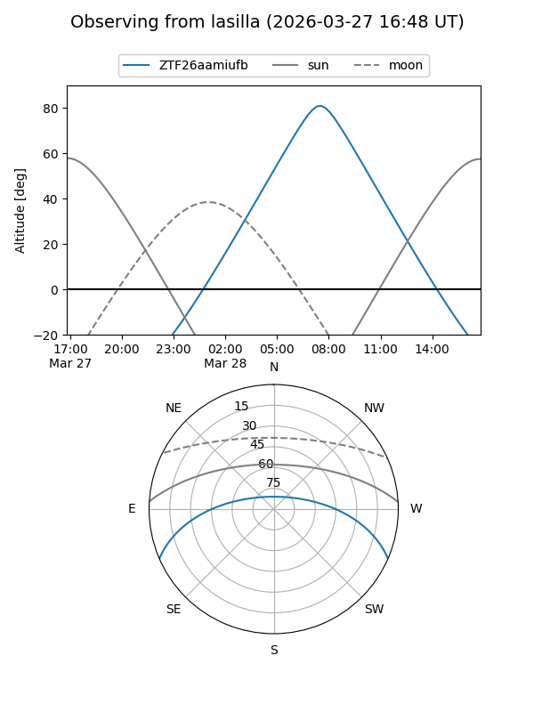
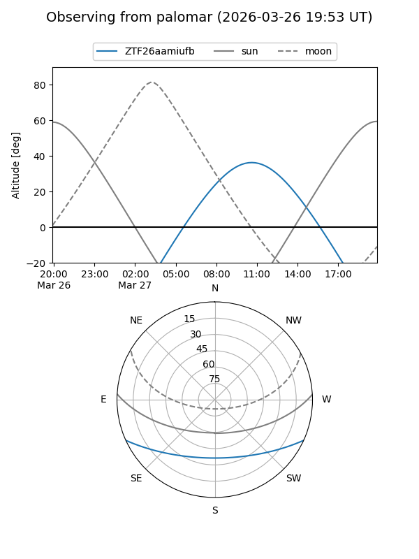

ZTF26aamiufb
Target ZTF26aamiufb at 2026-03-27 10:08
Aliases and brokers:
FINK: link
Lasair: link
ALeRCE: link
alt names
ZTF26aamiufb (ztf,fink_ztf)
Coordinates:
equatorial (ra, dec) = 226.9426,-20.22110
equatorial (HMS+DMS) = 15:07:46.23,-20:13:15.96
galactic (l, b) = (341.3936,+32.28096)
Flags:
Photometry:
last ztfg=16.98
1 ztfg detections
Lightcurve
Visibility


Additional plots